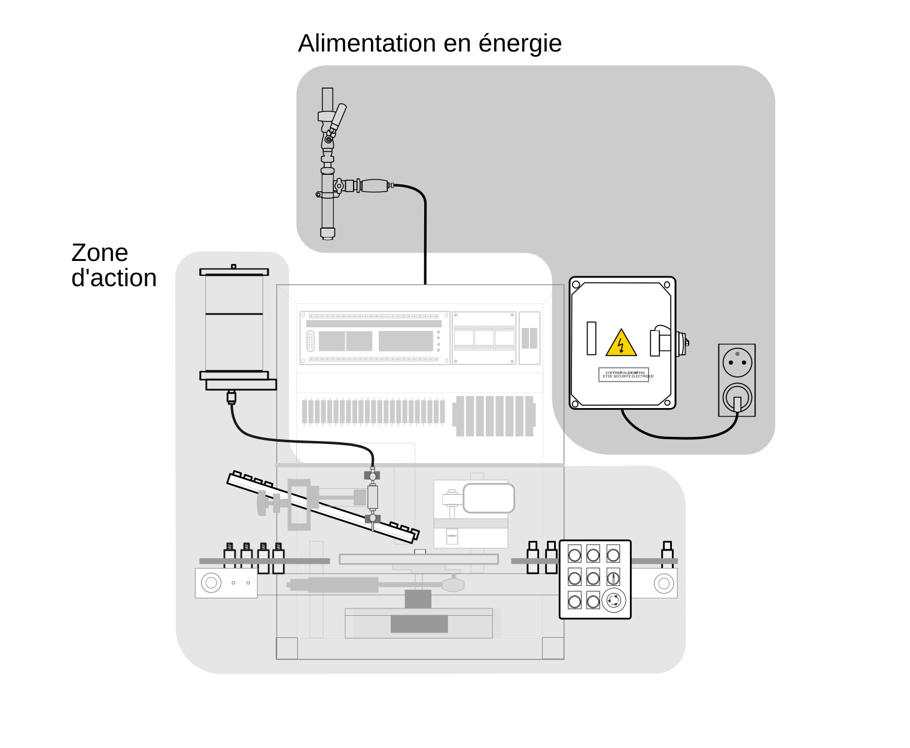

Informations
Informations techniques
Conformité à la directive européenne 2006/42/CE relative aux machines
|
DEBUG  |
La machine décrite dans la présente documentation est conforme aux exigences essentielles de santé et de sécurité de la directive 2006/42/CE relative aux machines. Une déclaration de conformité CE a été établie par le fabricant et est tenue à la disposition des autorités compétentes. La machine a été conçue et fabriquée conformément aux normes harmonisées applicables, notamment EN ISO 12100 et EN 60204-1, le cas échéant. |
Caractéristiques techniques
| Bruit | < 70 dB |
| Masse de l'équipement | 80 kg sans pieds support, 110 kg avec pieds support |
| Dimensions | L 1,15M X P 0,75 M X H 0,85 M |
| Pression pneumatique nominale d'utilisation | 6 bars |
| Consommation d'air nominale en utilisation continue | 7 litres/minute |
| Puissance nominale | 0,9 kW |
| Organes de sécurité | Protecteurs fixesProtecteur mobile avec capteur de sécuritéArrêt d'urgenceModule de contrôle de sécurité (redondance et auto contrôle des circuits de sécurité) |
| Automate programmable | M221 CE40R de Télémécanique |
| Constructeur | RAVOUX AUTOMATISMESRue de l’industrie - ZI Vichy Rhue03300 CREUZIER LE VIEUXTél. 04.70.97.48.62 |
Informations pédagogiques
La MINIDOSA est une machine de flaconnage. Les flacons entrent vides dans la machine et ressortent remplis de liquide et vissés d'un bouchon.
La MINIDOSA est une machine à visée pédagogique. Elle permet aux élèves de filières technologiques d'appréhender des conditions industrielles réalistes dans un environnement contrôlé.
DEBUG

Consignes de sécurité
Exposer la machine à l’abri de l’humidité et des projections d’eau..
N’accéder au coffret d’alimentation électrique qu’avec l’habilitation nécessaire.
DEBUG

Détail des zones d’action
|
DEBUG  |
Interrupteur principalSitué sur le côté droit de la machine.Met la machine sous tension. |
|
DEBUG  |
RéservoirContient le liquide utilisé pour le
remplissage des flacons. Capacité : 1 L. |
|
DEBUG  |
Vis de
butéeRègle la capacité de
liquide dans chaque flacons . Capacité maximale : 10 cl. |
|
DEBUG  |
Rampe de
distributionSituée derrière
le poste de remplissage.Sert à stocker les bouchons déposés trous vers le
bas. Capacité : 13 bouchons. |
|
DEBUG  |
Tapis
d’entréeTransporte les
flacons vides vers le plateau. Capacité : 11 flacons. |
|
DEBUG  |
PlateauTransporte les flacons depuis le tapis
d’entrée à la station de remplissage de liquide, vissage de
bouchons jusqu’au tapis de sortie . Capacité : 3 flacons. |
|
DEBUG  |
Poste de vissageVisse un bouchon déposé sur le flacon. |
|
DEBUG  |
Tapis de
sortieÉvacue les flacons
remplis et bouchés. Capacité : 6 flacons. |
Détails du pupitre et ses modes d'utilisation
DEBUG

|
DEBUG  |
Bouton-voyant EN SERVICEEst allumé lorsque la machine est en service.Met la machine en service. |
|
DEBUG  |
Voyant SOUS TENSIONEst allumé lorsque la machine est sous tension. |
|
DEBUG  |
Bouton MAINIl est utilisé lorsque le sélecteur AUTO / O / MAIN est en mode MAIN.Fait tourner le plateau d'un cran. |
|
DEBUG  |
Bouton MARCHEEst utilisé lorsque le sélecteur AUTO / O / MAIN est en mode AUTO.Lance la production de flacons remplis et bouchés. |
|
DEBUG  |
Voyant DEFAUTEst allumé lorsque le bouton coup de poing ARRET D'URGENCE est enclenché. |
|
DEBUG  |
Sélecteur AUTO / O / MAINPropose trois modes : AUTO (Automatique), O (Purge), MAIN (Manuel) |
|
DEBUG  |
Bouton PURGEEst utilisé lorsque le sélecteur AUTO / O / MAIN est en mode 0.Actionne la seringue du poste de remplissage. |
|
DEBUG  |
Bouton ARRETEst utilisé lorsque la production en mode AUTO est en cours.Met la production en pause. |
|
DEBUG  |
Bouton coup de poing ARRET D'URGENCEMet la production en pause.Met la machine hors service.Doit être acquitté avant de relancer la production. |